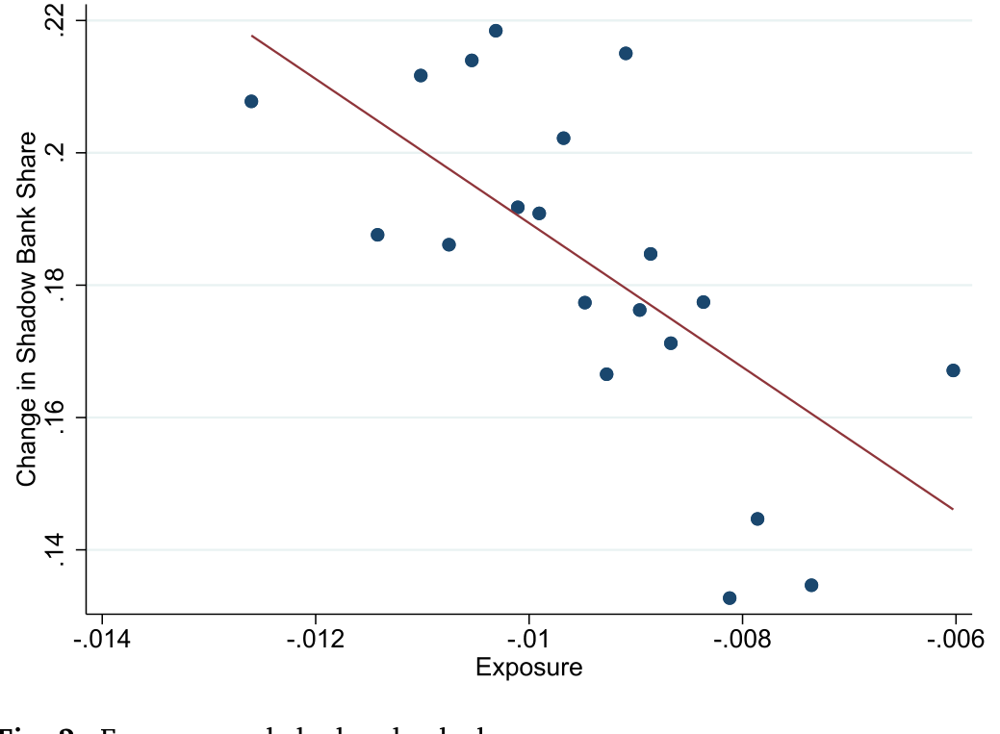
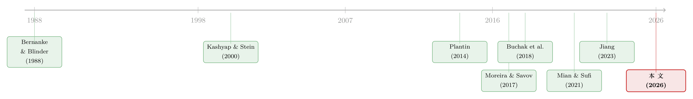

利率长跌二十年，如何亲手喂大了影子银行
本文读的是 Sarto & Wang (2026, Journal of Financial Economics)：过去二十年美国影子银行在住房按揭市场的份额一路攀升，常被归因于「监管套利」和「金融科技」。本文给出了第三个、也是被忽视的推手——利率的长期下行。当利率高企时，廉价存款是银行对抗影子银行的护城河；可当利率一路逼近零，护城河干涸，银行净息差被挤压、盈利变差、增长放缓、甚至关掉网点，影子银行则趁虚而入。作者用一套基于历史资产负债表结构的 shift-share 设计，把这条因果链一节一节坐实了。
1 一个被讲滥了、却讲漏了一半的故事
影子银行 (shadow banks) 的崛起，是过去十几年金融领域最被反复书写的故事之一。数字本身就够抓人：Buchak et al. (2018) 记录，在美国住房按揭市场，影子银行（按揭公司之类的非存款机构）的发起份额从 2007 年的不到 30%，一路涨到 2015 年的将近 50%。监管者为之忧心忡忡——这些机构靠的是随时可能蒸发的批发融资，2008 年证券化市场冻结时，正是非银的资金链断裂放大了那场信贷危机。
那么，是什么把它们喂大的？
主流的答案有两个。第一个叫「监管套利」(regulatory arbitrage)：金融危机后监管收紧，资本密集型业务被挤出受监管的传统银行，流向不受约束的影子地带。第二个叫「技术」(technology)：线上平台和自动化放贷的进步，让轻装上阵的非银跑得飞快，而背着网点和信贷员的传统银行转身缓慢。这两个故事都对，Buchak et al. (2018) 也都量化过。
但本文作者想说的是：这个故事漏掉了一半。同样是这二十年，还发生了另一件大事——利率的长期、持续下行。而这件事，恰恰被研究影子银行的人和研究银行盈利的人各做各的、彼此隔绝地讨论着。
接着，一个自然的问题浮出水面：利率下行，凭什么会让影子银行得利？
2 护城河为什么会干涸
要回答这个问题，得先想清楚银行和影子银行到底差在哪。
传统银行的看家本领，是能用低于市场利率的价格吸收又安全又稳定的存款。我们把这个差价叫存款利差 (deposit spread)，记作 \(s_d \ge 0\)——存款付的利率是 \(r_d = r - s_d\)。这个 \(s_d\) 里既有储户为了便利和安全愿意放弃的收益，也有银行的市场势力租金。影子银行没有这门生意，它只能在批发市场上以高于 \(r\) 的成本融资。
关键的一步在于：这个存款利差 \(s_d\) 不是固定的，它随利率水平变化。
直觉是这样的：存款真正的竞争对手是现金。利率高的时候，持有现金的机会成本很大，于是存款很香，银行能压低存款利率、赚到厚厚的 \(s_d\)；可当名义利率一路逼近零，持有现金几乎没有损失，现金就成了存款的有力替代，储户不再愿意为「安全便利」让渡多少收益，存款利差 \(s_d\) 被迫收窄。
于是反转出现了：银行相对影子银行的全部优势，都系在这条会随利率下行而干涸的护城河上。利率高时，影子银行的批发融资劣势最严重——因为此时银行的存款利差最厚；利率跌到地板，银行的存款优势消失，影子银行的相对劣势也就烟消云散。这就是本文的核心机制：利率下行对银行和非银的冲击是非对称的。
（关于不同结构的银行对同一货币政策冲击反应迥异这件事，可参见《同样的加息，为什么德国的银行和西班牙的银行走向相反？》，本文则把镜头拉到了二十年尺度的利率长趋势上。）
3 一个三方竞争的小模型
本文最漂亮的地方，是把上面这套直觉装进了一个干净的均衡模型。让我们一步步看它怎么转起来。
银行端。 银行受一条监管杠杆约束：总借款 \(D^B\) 不能超过自有资本 \(E^B\) 的 \(\phi\) 倍。于是银行放贷规模——由资本和存款共同支撑——必须满足
$$L^B \le (1+\phi) E^B$$
这里的 \(1+\phi\) 可以理解为「按证券化速度调整后的杠杆」：哪怕是符合标准、能卖给 GSE 的贷款，也不能瞬间出表，仍要占用一点资产负债表空间。更要命的是，作者假设银行只能靠留存利润增厚资本，不能随时增发股权——这与现实相符，也意味着盈利一旦受损，放贷能力会被直接卡住。
影子银行端。 它不受监管约束，但没有存款，只能在批发市场融资，且边际成本随规模递增（信息不对称所致）。它每期解
$$\max_{L}\;(1+r_\ell)L - (1+r)L - \tau(L) - \gamma^{SB} L$$
其中 \(\tau(L)\) 是批发融资相对 \(r\) 的递增凸成本，\(\gamma^{SB}\) 是影子银行的放贷技术成本。最优供给是利差净技术成本的增函数 \(L^{SB}(s_\ell - \gamma^{SB})\)。
市场出清。 存款市场与贷款市场各自出清：
$$D(s_d, r) = \phi E^B$$
$$L(s_\ell) = (1+\phi)E^B + L^{SB}(s_\ell - \gamma^{SB})$$
第一式说存款需求等于银行的存款吸纳量；第二式说总贷款需求 = 银行放贷 + 影子银行放贷。
真正把三方拧在一起的，是银行的盈利条件。 银行要赚到目标的超额股本回报 \(\rho\)，必须靠存款利差和贷款利差的组合来实现：
这一式是全文的枢纽。现在看利率下行 \(\Delta r < 0\) 会发生什么：第一，利率下降让现金更具吸引力，存款需求被向下推，均衡的存款利差 \(s_d\) 必须随 \(r\) 一起下落；第二，可银行的目标回报 \(\rho\) 没变——于是为了补上存款这头丢掉的收入，贷款利差 \(s_\ell\) 被迫上升；第三，更高的贷款利差，恰恰给了影子银行扩张的空间，\(L^{SB}\) 随之上升。这就把直觉走成了定理：
命题 1（对冲击的响应）。 当 \(r < \bar r\) 时：（1）监管收紧 \(\Delta\phi<0\) 抬高 \(s_\ell\)、压低 \(L^B\)、推高 \(L^{SB}\)；（2）影子银行技术进步 \(\Delta\gamma^{SB}<0\) 压低 \(s_\ell\)、压低 \(L^B\)、推高 \(L^{SB}\)；（3）利率下行 \(\Delta r<0\) 压低 \(s_d\)、压低 \(L^B\)、推高 \(L^{SB}\)。
三种冲击对「量」的方向完全一致：都让银行萎缩、影子银行扩张。监管和技术，正是 Buchak et al. (2018) 讲过的两个故事；而第三条关于 \(r\) 的预测，是本文新增的那块拼图。
还有一个被 Lemma 1 点明的细节很妙：只有当利率已经足够低（\(r < \bar r\)）时，再降息才会真正推升影子银行放贷。这或许解释了为什么利率从上世纪 80 年代末就开始降，影子银行的大扩张却主要发生在 2000 年代——得等护城河快见底，故事才上演。
成本削减渠道。 作者还把模型往前推了一步。银行赚存款利差不是白来的：要维持网点、付薪水、做 App，每元存款要花运营成本 \(c\)。于是利率长期走低、净利息收入缩水时，银行被迫砍掉这些 \(c\)——关网点、裁人。而网点和放贷之间存在互补：有效的银行贷款供给可写成 \(L^B = \alpha(c)(1+\phi)E\)，其中 \(\alpha(c)\) 随 \(c\) 递增。砍成本于是又反过来压低放贷，放大了命题 1 里的净值渠道。这个「成本削减渠道」(cost-cutting channel) 后面在数据里也得到了印证。
4 识别策略：用历史资产负债表「猜」出谁会受伤
模型讲完，最难的一关来了：怎么把「利率下行 → 银行收缩 → 影子银行崛起」这条因果链从一堆同时变化的总量数据里拎出来？
答案藏在 Fig. 1 那条下行的净息差 (net interest margin, NIM) 曲线里——但平均的下行掩盖了巨大的异质性。利率向资产负债表各科目的传导速度天差地别：活期和储蓄存款的利率传导比定期存款慢；资产端各类资产的久期也不同。于是，资产端传导快、负债端传导慢的银行，对利率下行最脆弱。
这一异质性直接催生了本文的 shift-share（移动份额）设计。对每家银行 \(b\)，作者构造一个「利率下行暴露度」(exposure) 指标 \(e_{bt}\)：把滞后的资产负债表权重（份额, share）与各科目收益率的全国趋势（移动, shift）相乘加总。
这里有个识别上的讲究：\(e_{bt}\) 与银行实现的 NIM 有两点关键不同——它只用全国统一的利率变化 \(r^i_t\)，因而忽略了各银行间的定价差异；它把资产负债表结构固定在历史时点。正因如此，暴露度不会被银行自身的需求冲击、借款人构成变化、或存贷市场势力的变迁所污染。简言之，它捕捉的是「仅仅因为你 2003 年的资产负债表长这样，利率这么跌，你就该受这么多伤」，而不掺杂你后来的任何主动选择。
锚定在模型上的还有一个细节（Section 3.2 的动态模型）：由于长期固定利率资产的存在，银行净息差和资本对永久性降息的反应可能是驼峰形的——先升后降。所以实证检验必须拉足够长的时间窗，否则会看错符号。这也是本文反复强调「长期」、与货币政策冲击后几个季度的「短期」银行放贷渠道文献划清界限的原因。
5 主要结果：一节一节坐实因果链
有了暴露度这把尺子，结果便顺着模型的逻辑一节一节落地。
第一节，银行受伤。 在美国银行的横截面上，2003–2016 年间暴露度更高的银行净利润更低——也就是说，它们没能靠手续费收入补上历史资产负债表结构注定的利差挤压。盈利变差 → 资本增长变慢 → 资产和贷款增长（商业贷款和住房按揭都包括在内）双双放缓。这与「稀缺的银行资本约束放贷、银行又不愿增发股权」这一类模型完全吻合。作者还发现，暴露银行减持了抵押贷款支持证券 (MBS)——说明放贷收缩不是简单地把按揭从「持有」换成了「别的融资方式」。
第二节，影子银行得利。 这是全文的主结果。作者把镜头聚焦到住房按揭市场（因为有丰富的县级数据）。先用「银行—地区」回归确认：暴露银行更多的县，银行按揭放贷下降了——加入县固定效应吸收掉了县层面的信贷需求冲击。然后是关键一击：
暴露银行更多的县，影子银行份额上升更猛——县内银行暴露度每多
100 bps（按本地放贷量加权），影子银行份额大约多升10%。

Figure 2: Exposure and shadow bank share. 𝑏𝑡
这正坐实了那句话：在银行被利率下行打趴下的地方，影子银行攻城略地。而且作者沿用 Buchak et al. (2018) 的做法证明，这个暴露度效应不是来自本地银行监管负担的上升、也不是来自本地线上放贷技术的进步——也就是说，它确实是利率这条新渠道，而非旧故事的化身。
第三节，两类贷款都受影响 + 成本削减渠道。 作者把按揭分成「GSE 贷款」（卖给两房、Ginnie、Farmer Mac 或任何 FHA 贷款）和「非 GSE 贷款」（如超过限额的 jumbo 贷款）。直觉上 GSE 贷款出表快、占用资产负债表少，本该对银行融资能力下降不那么敏感；非 GSE 贷款则更难被缺乏长期融资能力的影子银行发起。可有意思的是，两类贷款的影子银行扩张都很强。作者用「成本削减渠道」统一解释了这件事：暴露银行因净利息收入下降而削减非利息支出——尤其是固定资产和薪水，关网点、收缩分支网络，于是所有种类的贷款发起都被殃及。
6 文献脉络
把这篇论文放回它生长的土壤里看，会更清楚它新在哪。
理论端，关于影子银行的早期工作几乎都围着「监管套利」转：Plantin (2014)、Hanson et al. (2015)、Farhi & Tirole (2020) 论证了轻监管的影子银行如何与重监管但享有政府兜底的传统银行竞争，以及业务向影子地带迁移的威胁如何反过来约束监管设计。宏观金融一脉——Moreira & Savov (2017)、Begenau & Landvoigt (2021)——则刻画了影子银行扩张带来的风险与低效。

实证端的奠基之作是 Buchak et al. (2018)，它在住房按揭市场上同时量化了监管与技术两股力量，是本文一切的出发点。此后一批论文把影子银行的版图铺向各个市场：按揭（Mian & Sufi, 2021；Jiang, 2023 等）、小企业贷款（Gopal & Schnabl, 2022）、银团贷款（Irani et al., 2020）。
另一条平行的脉络，是关于「低利率伤害银行盈利」的研究：Borio et al. (2017)、Drechsler et al. (2017) 揭示了存款市场势力如何影响利率传导。再往前推，是经典的「银行放贷渠道」(bank lending channel) 文献——Bernanke & Blinder (1988)、Kashyap & Stein (1995, 2000)、Kishan & Opiela (2000)——它们关心的是降息后放贷扩张的强弱。
本文最贴近的同行是 Wang (2022)、Balloch & Koby (2022) 和 Supera (2022)，它们都强调低利率对银行信贷供给的长期影响。而 Sarto & Wang 的贡献是双重的：第一，用银行暴露度这一可信外生的变异，刻画了利率下行如何收缩美国银行放贷；第二，与那些只盯着银行的文献不同，它第一个把影子银行的强烈反应也纳进来。一个有趣的对照是 Drechsler et al. (2022)：那篇研究 2003–2006 利率上行期的非银放贷，本文在长期、利率下行的方向上发现了相反的图景——这两者可以调和，因为利率上行引发的存款外流会立刻冲击放贷，而净利息收入的压缩则要更长时间才会侵蚀银行资本与放贷。
7 评论与延伸（Q&A + 研究方向）
(a) 几个可能的疑问
Q：这套「利率下行」解释，会不会只是把监管和技术故事换了个说法？
不会，作者专门处理了这一点。他们沿用 Buchak et al. (2018) 的检验，证明暴露度效应不随本地银行监管负担或本地线上放贷技术进步而消失。更妙的是，他们指出三者之间是互补而非替代：紧的资本监管让 NIM 压缩格外伤人（因为留存利润是资本的主要来源），而低股本比的暴露银行收缩得更厉害——利率渠道恰恰要通过监管约束才放大。
Q：暴露度 \(e_{bt}\) 用全国利率构造、又固定历史资产负债表，会不会反而丢掉了真正的因果变异？
这正是设计的用意。用实现的 NIM 会内生于银行自身的需求冲击、借款人构成、市场势力变化；而 \(e_{bt}\) 只问「给定 2003 年的资产负债表结构，全国利率这么走，你机械上该受多少伤」。代价是它无法捕捉银行的主动适应（如提高贷款利差、做手续费收入），但作者的结果恰恰显示这种适应是不完全的——暴露银行净利润确实更低。
Q：为什么利率从 80 年代末就开始降，影子银行的大扩张却拖到 2000 年代？
模型里的 Lemma 1 给了答案：存在一个阈值 \(\bar r\)，只有当利率已经足够低（\(r < \bar r\)）时，再降息才会把均衡贷款利差 \(s_\ell\) 顶到技术成本 \(\gamma^B\) 之上、从而真正喂养影子银行。高利率区间里护城河还很深，降一点无伤大雅；得等护城河快见底，故事才开演。
Q：为什么连出表快、本不占资产负债表的 GSE 贷款，影子银行份额也涨了？
靠的是「成本削减渠道」。暴露银行净利息收入下降后，砍的是固定资产和薪水——关网点、收缩分支网络。由于网点与放贷互补（\(L^B=\alpha(c)(1+\phi)E\)），网点一收缩，所有种类的贷款发起都被拖累，不分 GSE 与非 GSE。
Q：这和经典的「银行放贷渠道」到底有什么不同？
两点。第一是时间尺度：放贷渠道文献关心降息后几个季度的放贷扩张，本文关心利率长期下行带来的多年期收缩。第二是利率区间：本文聚焦利率低到接近零下限的「反常」区间，此时利率对银行的影响会变号。作者也坦承，把长期结果与短期放贷渠道结果在实证上调和起来，是个重要的待解问题。
Q：「驼峰形」反应是什么，为什么重要？
因为银行持有长期固定利率资产。永久性降息后，这些老资产短期内还在吃高票息，银行的 NIM 和资本可能先升后降。这意味着如果只看降息后头几年，你会得出「低利率对银行有利」的错误结论——必须把窗口拉到足够长（本文用到 2016 年），才能看到后半段的下行。
(b) 几个可能的研究问题与提案
1. 把这条机制搬到公司债/信用市场。 【经济故事】本文聚焦住房按揭，但它一再强调影子银行在多个信用市场同步崛起。直接信贷基金 (direct lending)、私募信贷在低利率十年里爆发式扩张——是否同样是「银行护城河干涸」喂出来的？银行在杠杆贷款、中间市场贷款上的退潮，与其利率暴露度是否相关？ 【可行性】中。需要把银团贷款 (DealScan/Irani et al. 2020 的框架) 或私募信贷数据与银行层面的暴露度 \(e_{bt}\) 匹配；识别可沿用本文的 shift-share。难点是私募信贷的放贷方数据披露稀疏，份额测度不易。
2. 影子银行扩张后，信用市场的流动性发生了什么？ 【经济故事】本文止步于「份额」之争，但非银靠批发融资、危机时易断链（2008、2020 年 3 月都是教训）。当一个县/一个信用细分市场被影子银行主导后，其二级市场流动性、危机期的信贷可得性是否系统性变差？ 【可行性】中。按揭可用证券化层面的流动性指标；公司债可用 TRACE 的买卖价差。识别上可用本文的银行暴露度作为「影子银行渗透」的工具变量，规避份额内生性。
3. 外资持有人会不会是另一类「无存款护城河」的放贷方？ 【经济故事】本文的核心区分是「有无廉价存款融资」。外资机构投资者在美国信用市场的角色，与影子银行有相似处——它们同样不靠美国存款，融资成本受本国利率与汇率对冲成本驱动。利率下行是否也非对称地改变了外资 vs. 本土银行的相对竞争力？ 【可行性】中偏低。需要把外资持有人的信用市场份额（如公司债持有）与利率周期、对冲成本对齐；识别困难，外生变异来源不清晰，更可能是一篇描述性+机制刻画的论文。
4. 「成本削减渠道」的实体后果：关掉的网点，伤了谁？ 【经济故事】本文发现暴露银行砍网点、裁薪水。那些被关掉网点的社区，小企业信贷、家庭金融可得性是否随之恶化？影子银行的线上放贷能否完整填补这个缺口，还是留下了「信贷沙漠」？ 【可行性】高。FDIC 有逐网点的存款与开关数据 (Summary of Deposits)，可与县级小企业贷款 (CRA 数据) 匹配，用银行暴露度做 shift-share，识别清晰、数据现成。
8 我的判断与参考文献
贡献。 这篇论文最让我欣赏的，是它把两个本来各说各话的文献——「低利率伤银行盈利」和「影子银行崛起」——用一个干净的均衡模型 + 一套可信的 shift-share 缝在了一起，并且把影子银行的反应也一并纳入，而不是像多数文献那样只盯着银行。「护城河随利率下行而干涸」这个比喻既直观又有模型撑腰，命题 1 把监管、技术、利率三股力量放在同一框架里对照，叙事完整。100 bps 暴露度对应约 10% 影子银行份额上升，是个不小的量级。
对识别的担忧。 我有两点保留。其一，shift-share 设计的外生性最终落在「历史资产负债表权重与后续利率冲击不相关」这一假设上——但 2003 年选择持有大量长期固定利率资产、慢传导负债的银行，可能本身就在经营战略、客户结构、地域上系统性不同，这些差异未必都被县固定效应吸收（Borusyak et al. 2021 对此类设计的诊断值得照做）。其二，「成本削减渠道」是观测到的相关性（暴露银行确实砍了网点和薪水），但从「砍网点」到「按揭放贷下降」的因果箭头，仍有反向因果的空间——是没生意了才关网点，还是关了网点才没生意？
后续想看到的。 我最想看到作者把短期（放贷渠道文献）与长期（本文）的结果在同一个动态模型里对齐，正如他们自己点名的那样——驼峰形反应是个诱人的桥梁，值得用结构估计把符号变号的时点定量出来。另外，影子银行接管之后的流动性与稳定性后果（见上面的研究方向 2），才是监管者真正夜不能寐的问题，而本文止步于份额，留了一大片空白。
参考文献
- Buchak, G., Matvos, G., Piskorski, T., Seru, A. (2018). Fintech, regulatory arbitrage, and the rise of shadow banks. Journal of Financial Economics 130(3), 453–483.
- Drechsler, I., Savov, A., Schnabl, P. (2017). The deposits channel of monetary policy. (as cited via deposit market power literature.)
- Borio, C., Gambacorta, L., Hofmann, B. (2017). The influence of monetary policy on bank profitability. International Finance 20(1), 48–63.
- Hanson, S., Shleifer, A., Stein, J. C., Vishny, R. W. (2015). Banks as patient fixed-income investors. Journal of Financial Economics 117(3), 449–469.
- Plantin, G. (2014). Shadow banking and bank capital regulation. Review of Financial Studies 28(1), 146–175.
- Moreira, A., Savov, A. (2017). The macroeconomics of shadow banking. Journal of Finance 72(6), 2381–2432.
- Kashyap, A. K., Stein, J. C. (2000). What do a million observations on banks say about the transmission of monetary policy? American Economic Review 90(3), 407–428.
- Bernanke, B. S., Blinder, A. S. (1988). Credit, money, and aggregate demand. American Economic Review 78(2), 435–439.
- Mian, A., Sufi, A. (2021). Credit supply and housing speculation. Review of Financial Studies 35(2), 680–719.
- Irani, R. M., Iyer, R., Meisenzahl, R. R., Peydró, J.-L. (2020). The rise of shadow banking: Evidence from capital regulation. Review of Financial Studies 34(5), 2181–2235.
- Jiang, E. X. (2023). Financing competitors: Shadow banks' funding and mortgage market competition. Review of Financial Studies 36(10), 3861–3905.
- Borusyak, K., Hull, P., Jaravel, X. (2021). Quasi-experimental shift-share research designs. Review of Economic Studies 89(1), 181–213.